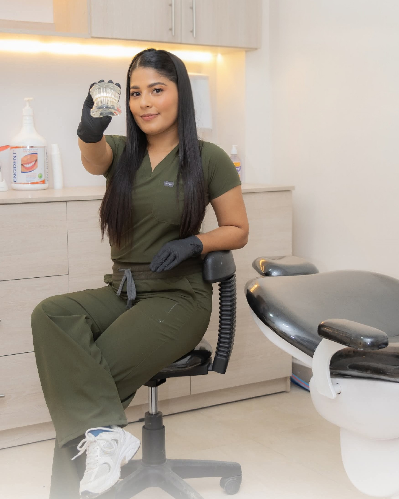
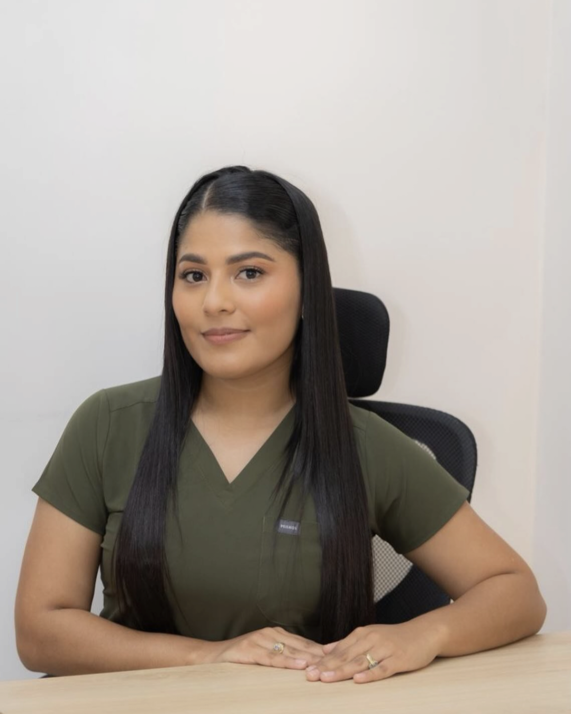
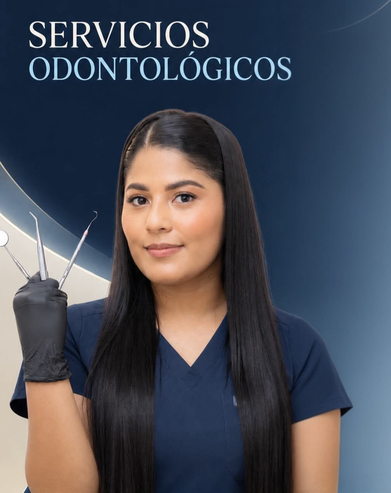

Limpieza dental
Tratamiento orientado a mantener una correcta higiene y salud bucal mediante profilaxis y remoción de sarro.
“Sonrisas sanas, pacientes felices”
En SIONAMED Centro Médico Integral cuidamos tu salud bucal con atención profesional, cercana y personalizada en Shushufindi.

Contamos con diferentes tratamientos para cuidar, prevenir y mejorar la salud de tu sonrisa.
Tratamiento orientado a mantener una correcta higiene y salud bucal mediante profilaxis y remoción de sarro.
Protección preventiva colocada en las fisuras de los dientes para ayudar a evitar la aparición de caries tempranas.
Procedimientos de extracción dental seguros, indoloros y realizados con atención profesional y máxima asepsia.
Tratamientos estéticos con resina de alta durabilidad para recuperar y proteger piezas dentales afectadas por caries.
Procedimiento estético avanzado para aclarar tonalidades y devolver luminosidad y armonía a tu sonrisa.
Alternativa definitiva para recuperar piezas dentales perdidas mediante soluciones fijas y de apariencia natural.
Extracción especializada de muelas del juicio impactadas o en mala posición con recuperación controlada.
Tratamientos correctivos orientados a mejorar la alineación dental, la funcionalidad masticatoria y la mordida.

Odontóloga General & Estética Dental
Profesional comprometida con brindar atención odontológica personalizada, buscando que cada paciente se sienta seguro, escuchado y acompañado durante todo su proceso de recuperación y salud oral.
Nos enfocamos en brindarte una experiencia médica basada en la seguridad y el confort.
Nos enfocamos en comprender a detalle las necesidades y expectativas de cada paciente.
Contamos con vocación y experiencia médica orientadas estrictamente al bienestar del paciente.
Disponemos de diferentes alternativas para resolver desde limpiezas hasta cirugías e implantes.
Un consultorio equipado para brindar tranquilidad, confianza y relajación en cada visita.
En SIONAMED trabajamos para ofrecerte una experiencia odontológica basada en confianza, instrumental esterilizado de última generación y acompañamiento clínico personalizado en el corazón de Shushufindi.
Conocer Más de SIONAMED
Agenda tu cita odontológica y recibe atención profesional en SIONAMED Centro Médico Integral.
SIONAMED Centro Médico Integral
Calle Orellana a una cuadra del parque Siona, frente a la Cevichería Delicias del Mar. Shushufindi, Sucumbíos, Ecuador.
+593 98 118 6072
Lunes a Viernes: 08:00 - 19:00
Sábados: 08:00 - 13:00
Domingos: Previa cita de urgencia